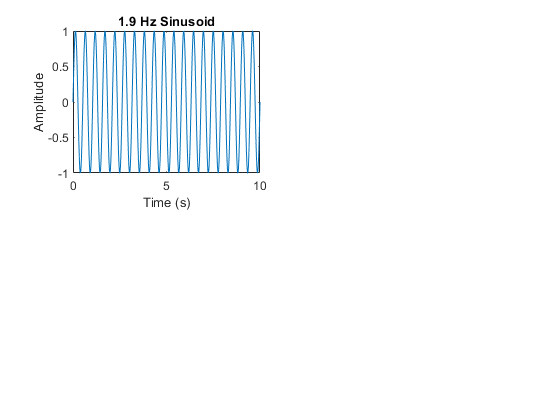
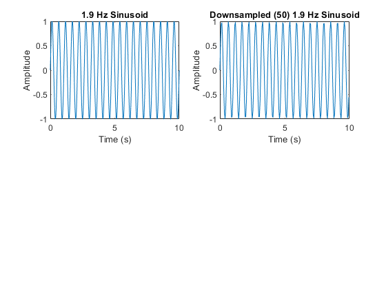
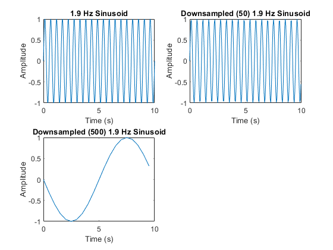
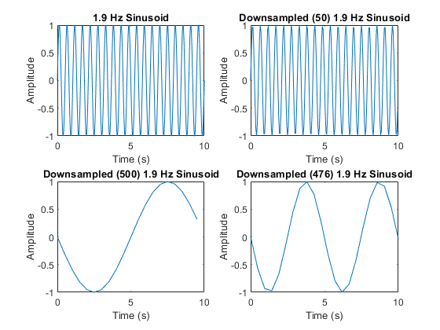
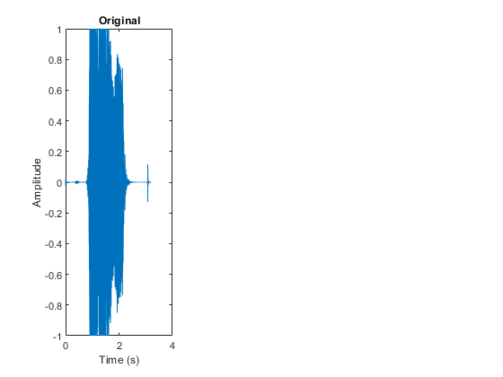
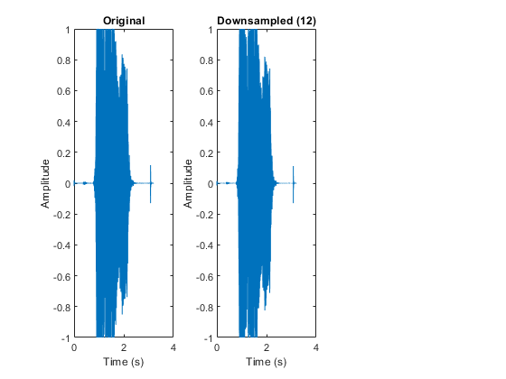
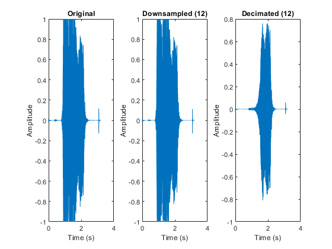

Contents
- QUESTION 1: Construct a 1.9 Hz sinusoid for a 10 s signal duration (i.e., 19 full cycles). Plot this sinusoid with an initial sample rate of 1000 Hz (i.e., N = 10,000 samples). What is its Nyquist frequency?
- QUESTION 2: Downsample the sinusoid from step 1 by a factor of 50 while keeping the signal duration 10 s. (Hint… you can easily downsample by passing the notation (1:50:end) as indices to your vector. What is the new Nyquist frequency of your sample? What is the frequency of the plotted signal?
- QUESTION 3: Downsample the sinusoid from step 1 by a factor of 500 and plot the new data. What is new Nyquist frequency and what is the (aliased) frequency of the plotted signal (should be easy to estimate off of the graph)?
- QUESTION 4:
- QUESTION 5: Based upon your findings in 3 and 4 derive an explicit expression for the aliased frequency as a function of Nyquist frequency and original frequency.
- PART 2: demonstrates aliasing using sound wave recordings and two different methods of downsampling.
- QUESTION 1: Load in data file whistle.mat located at course website assignment directory. Plot the time series using an appropriate time axis (in s) and the specified sample rate. Use sound(Y,Fs) to play the sound. What is the Nyquist frequency?
- QUESTION 2: Downsample the sound data by a factor of 12 and plot it. Again, use sound to play your downsampled file. What is the new Nyquist frequency? Think about whether this new sample rate is high enough to adequately record a whistle sound.
- QUESTION 3: Now resample the original sound file by using the MATLAB function decimate(Y,12). Plot it on an appropriate time axis and play it at an appropriate sample rate. Learn about MATLAB’s decimate using help decimate.
- QUESTION 4: Provide a short answer to explain what is going on.
%%%%% ASSIGNMENT 02 (2023) - Nicole Hucke %%%%% ALIASING %%%%%%%
QUESTION 1: Construct a 1.9 Hz sinusoid for a 10 s signal duration (i.e., 19 full cycles). Plot this sinusoid with an initial sample rate of 1000 Hz (i.e., N = 10,000 samples). What is its Nyquist frequency?
A = 1; % No info on amplitude, so it's assumed f = 1.9; % frequency in Hz duration = 10; % duration in seconds sps = 1000; % sample rate in Hz (sample per second - sps) N = duration*sps; % number of samples (10,000 in this case) t = linspace(0, duration, N); % Creates a vector of 10 (duration) evenly spaced points in the interval [0,10000]. %create sin wave y = A*sin(2*pi*f*t); subplot(2, 2, 1); % divide the figure into 2 rows and 2 columns and select the 1st subplot plot(t, y); xlabel('Time (s)'); ylabel('Amplitude'); title(sprintf('1.9 Hz Sinusoid')); % display the Nyquist frequency downsampled_nyquist_frequency = sps/2; % Nyquist frequency is simply half the sampling rate disp(['Nyquist frequency: ', num2str(downsampled_nyquist_frequency), ' Hz']);
Nyquist frequency: 500 Hz
QUESTION 2: Downsample the sinusoid from step 1 by a factor of 50 while keeping the signal duration 10 s. (Hint… you can easily downsample by passing the notation (1:50:end) as indices to your vector. What is the new Nyquist frequency of your sample? What is the frequency of the plotted signal?
sps2 = sps/50; % downsampled rate in Hz (sample per second - sps) downsampled_y = y(1:50:end); % select every 50th sample downsampled_t = t(1:50:end); % correspondingly downsample the time vector subplot(2, 2, 2); % divide the figure into 2 rows and 2 columns and select the 2nd subplot plot(downsampled_t, downsampled_y); xlabel('Time (s)'); ylabel('Amplitude'); title(sprintf('Downsampled (50) 1.9 Hz Sinusoid')); % display the Nyquist frequency downsampled_nyquist_frequency = (sps2)/2; disp(['Downsampled (50) Nyquist frequency: ', num2str(downsampled_nyquist_frequency), ' Hz']); disp('The plotted signal fequency is still 1.9 Hz');
Downsampled (50) Nyquist frequency: 10 Hz The plotted signal fequency is still 1.9 Hz
QUESTION 3: Downsample the sinusoid from step 1 by a factor of 500 and plot the new data. What is new Nyquist frequency and what is the (aliased) frequency of the plotted signal (should be easy to estimate off of the graph)?
sps3 = sps/500; % sample rate in Hz (sample per second - sps) downsampled3_y = y(1:500:end); % select every 500th sample downsampled3_t = t(1:500:end); % correspondingly downsample the time vector subplot(2, 2, 3); % divide the figure into 2 rows and 2 columns and select the 3rd subplot plot(downsampled3_t, downsampled3_y); xlabel('Time (s)'); ylabel('Amplitude'); title(sprintf('Downsampled (500) 1.9 Hz Sinusoid')); % display the Nyquist frequency downsampled3_nyquist_frequency = (sps3)/2; disp(['Downsampled (500) Nyquist frequency: ', num2str(downsampled3_nyquist_frequency), ' Hz']); disp('The aliased signal fequency appears to be 0.1 Hz');
Downsampled (500) Nyquist frequency: 1 Hz The aliased signal fequency appears to be 0.1 Hz
QUESTION 4:
%Downsample the sinusoid from part 1 by a factor of 476 and plot the new data. What is new Nyquist frequency and what is the frequency of the plotted signal? sps4 = sps/476; % sample rate in Hz (sample per second - sps) downsampled4_y = y(1:476:end); downsampled4_t = t(1:476:end); subplot(2, 2, 4); % divide the figure into 2 rows and 2 columns and select the 4th subplot plot(downsampled4_t, downsampled4_y); xlabel('Time (s)'); ylabel('Amplitude'); title(sprintf('Downsampled (476) 1.9 Hz Sinusoid')); % display the Nyquist frequency downsampled4_nyquist_frequency = (sps4)/2; disp(['Downsampled (476) Nyquist frequency: ', num2str(downsampled4_nyquist_frequency), ' Hz']); disp('The aliased signal frequency appears to be 0.2 Hz');
Downsampled (476) Nyquist frequency: 1.0504 Hz The aliased signal frequency appears to be 0.2 Hz
QUESTION 5: Based upon your findings in 3 and 4 derive an explicit expression for the aliased frequency as a function of Nyquist frequency and original frequency.
disp('To obtain the aliased frequency of the waves, we must apply: 2 * aliased nyquist - original frequency') aliased_f3 = 2*downsampled3_nyquist_frequency - f; disp(['The aliased signal frequency from question 3 is ', num2str(aliased_f3)]); aliased_f4 = 2*downsampled4_nyquist_frequency - f; disp(['The aliased signal frequency from question 4 is ', num2str(aliased_f4)]);
To obtain the aliased frequency of the waves, we must apply: 2 * aliased nyquist - original frequency The aliased signal frequency from question 3 is 0.1 The aliased signal frequency from question 4 is 0.20084
PART 2: demonstrates aliasing using sound wave recordings and two different methods of downsampling.
QUESTION 1: Load in data file whistle.mat located at course website assignment directory. Plot the time series using an appropriate time axis (in s) and the specified sample rate. Use sound(Y,Fs) to play the sound. What is the Nyquist frequency?
load('whistle.mat'); t = ((1:length(Y))/Fs); close all subplot(1, 3, 1); % divide the figure into 1 row and 3 columns and select the 1st subplot plot(t,Y) xlabel('Time (s)'); ylabel('Amplitude'); title(sprintf('Original')); %sound(Y,Fs) nyquist2 = Fs/2; disp(['The nyquist frequency for this sound wave is: ' num2str(nyquist2)]);
The nyquist frequency for this sound wave is: 22050
QUESTION 2: Downsample the sound data by a factor of 12 and plot it. Again, use sound to play your downsampled file. What is the new Nyquist frequency? Think about whether this new sample rate is high enough to adequately record a whistle sound.
Y2 = Y(1:12:end); Fs2 = round(Fs/12); t2 = ((1:length(Y2))/Fs2); subplot(1, 3, 2) plot(t2,Y2); xlabel('Time (s)'); ylabel('Amplitude'); title(sprintf('Downsampled (12)')); %sound(Y2,Fs2); nyquist2 = Fs2/2; disp(['The nyquist frequency for this sound wave is: ' num2str(nyquist2)]);
The nyquist frequency for this sound wave is: 1837.5
QUESTION 3: Now resample the original sound file by using the MATLAB function decimate(Y,12). Plot it on an appropriate time axis and play it at an appropriate sample rate. Learn about MATLAB’s decimate using help decimate.
Ydec = decimate(Y,12); subplot(1, 3, 3) plot(t2, Ydec) xlabel('Time (s)'); ylabel('Amplitude'); title(sprintf('Decimated (12)')); %sound(Ydec,Fs2);
QUESTION 4: Provide a short answer to explain what is going on.
Why are whistle sounds in 2 and 3 distorted?
disp('They are downsampled by a factor of 12, which involves reducing the number of samples in the signal, while preserving its original frequency content') % How is their distortion different? disp('By just listening, it appears that 3 somewhat follows the original tone similarly to the original, but with a higher pitch, whereas 2 has tone variations') % Which of the signals is aliased? disp('The second one (downsampled (12) is the aliased one') % What did decimate do to avoid aliasing? disp('It applied an anti-aliasing filter to the signal before downsampling. The anti-aliasing filter removes high-frequency components that are beyond the new Nyquist frequency (i.e., half the new sample rate) after downsampling. By removing these high-frequency components, the function helps ensure that the signal after downsampling will not contain any new, false frequencies that are created due to aliasing.')
They are downsampled by a factor of 12, which involves reducing the number of samples in the signal, while preserving its original frequency content By just listening, it appears that 3 somewhat follows the original tone similarly to the original, but with a higher pitch, whereas 2 has tone variations The second one (downsampled (12) is the aliased one It applied an anti-aliasing filter to the signal before downsampling. The anti-aliasing filter removes high-frequency components that are beyond the new Nyquist frequency (i.e., half the new sample rate) after downsampling. By removing these high-frequency components, the function helps ensure that the signal after downsampling will not contain any new, false frequencies that are created due to aliasing.